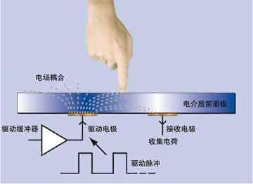
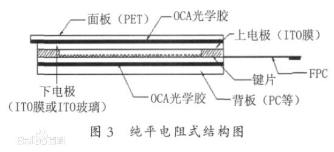

电容触屏和电阻触屏对比
| 触摸屏 | 电阻触屏 | 电容触屏 |
|---|---|---|
| 室内可视效果 | 通常很好 | 通常很好 |
| 触摸敏感度 | 需用压力使屏幕各层发生接触，可以使用手指（哪怕带上手套），指甲，触笔等进行操作。支持触笔在亚洲市场很重要，手势和文字识别在哪里都被看重。 | 来自带电的手指表层最细微的接触也能激活屏幕下方的电容感应系统。非生命物体、指甲、手套无效。手写识别较为困难。 |
| 精度 | 精度至少达到单个显示像素，触笔时能看出来。便于手写识别，有助于在使用小控制元素界面下进行操作。 | 理论精度可以达到几个像素，但会受手指接触面积限制。以至于用户难以精确点击小于1cm2的目标。 |
| 成本 | 很低廉。 | 不同厂商的电容屏价格比电阻屏贵10%到50%。这点额外成本对旗舰级产品无所谓，但可能会让中等价位手机望而却步。 |
| 多点触摸可行性 | 不可能，除非重组电阻屏与机器的电路连接。 | 取决于实现方式以及软件，已在G1的技术演示以及iPhone上实现。G1的1.7T版本已经可以实现浏览器的多点触摸特性。 |
| 抗损性 | 电阻屏的根本特性决定了它的顶部是柔软的，需要能够按下去。这使得屏幕非常容易产生划痕。电阻屏需要保护膜以及相对更频繁的校准。有利的方面是，使用塑料层的电阻触屏设备总体上更不易损，更不容易摔坏。 | 外层可以使用玻璃。这样虽然不至于坚不可摧，而且有可能在严重冲击下碎裂，但玻璃应对日常碰擦和污迹更好。 |
| 清洁 | 由于可以使用触笔或指甲进行操作，更不容易在屏幕上留下指纹、油渍和细菌。 | 要用整个手指进行触摸，但玻璃外层更容易清洁。 |
| 环境适应性 | 具体数值不得而知。但有证据表明使用电阻屏的Nokia 5800可以在-15°C至+45°C的温度下正常工作，对湿度也没什么要求。 | 典型的操作温度在0°至35°之间，需要至少5%的湿度(工作原理所限)。 |
| 阳光下可视效果 | 通常很糟，额外的屏幕层面反射了大量阳光。 | 通常很好 |
电容式触摸屏工作原理

电容屏要实现多点触控，靠的就是增加互电容的电极，简单地说，就是将屏幕分块，在每一个区域里设置一组互电容模块都是独立工作，所以电容屏就可以独立检测到各区域的触控情况，进行处理后，简单地实现多点触控。
电容技术触摸屏CTP（Capacity Touch Panel）是利用人体的电流感应进行工作的。电容屏是一块四层复合玻璃屏，玻璃屏的内表面和夹层各涂一层ITO（纳米铟锡金属氧化物），最外层是只有0.0015mm厚的矽土玻璃保护层，夹层ITO涂层作工作面，四个角引出四个电极，内层ITO为屏层以保证工作环境。
当用户触摸电容屏时，由于人体电场，用户手指和工作面形成一个耦合电容，因为工作面上接有高频信号，于是手指吸收走一个很小的电流，这个电流分别从屏的四个角上的电极中流出，且理论上流经四个电极的电流与手指头到四角的距离成比例，控制器通过对四个电流比例的精密计算，得出位置。可以达到99%的精确度，具备小于3ms的响应速度。
投射式电容面板的触控技术投射电容式触摸屏是在两层ITO导电玻璃涂层上蚀刻出不同的ITO导电线路模块。两个模块上蚀刻的图形相互垂直，可以把它们看作是X和Y方向 连续变化的滑条。由于X、Y架构在不同表面，其相交处形成一电容节点。一个滑条可以当成驱动线，另外一个滑条当成是侦测线。当电流经过驱动线中的一条导线时，如果外界有电容变化的信号，那么就会引起另一层导线上电容节点的变化。侦测电容值的变化可以通过与之相连的电子回路测量得到，再经由A/D控制器转为数字讯号让计算机做运算处理取得（X，Y） 轴位置，进而达到定位的目地。
操作时，控制器先后供电流给驱动线，因而使各节点与导线间形成一特定电场。然后逐列扫描感测线测量其电极间的电容变化量，从而达成多点定位。当手指或触动 媒介接近时，控制器迅速测知触控节点与导线间的电容值改变，进而确认触控的位置。这种一根轴通过一套AC 信号来驱动，而穿过触摸屏的响应则通过其它轴上的电极感测出来。使用者们把这称为‘横穿式’感应，也可称为投射式感应。传感器上镀有X，Y轴的ITO图 案，当手指触摸触控屏幕表面时，触碰点下方的电容值根据触控点的远近而增加，传感器上连续性的扫描探测到电容值的变化，控制芯片计算出触控点并回报给处理器。
电阻式触摸屏工作原理

电阻触摸屏的工作原理主要是通过压力感应原理来实现对屏幕内容的操作和控制的，这种触摸屏屏体部分是一块与显示器表面非常配合的多层复合薄膜，其中第一层为玻璃或有机玻璃底层，第二层为隔层，第三层为多元树脂表层，表面还涂有一层透明的导电层，上面再盖有一层外表面经硬化处理、光滑防刮的塑料层。在多元脂表层表面的传导层及玻璃层感应器是被许多微小的隔层所分隔电流通过表层，轻触表层压下时，接触到底层，控制器同时从四个角读出相称的电流及计算手指位置的距离。这种触摸屏利用两层高透明的导电层组成触摸屏，两层之间距离仅为2.5微米。当手指触摸屏幕时，平常相互绝缘的两层导电层就在触摸点位置有了一个接触，因其中一面导电层接通Y轴方向的5V均匀电压场，使得侦测层的电压由零变为非零，控制器侦测到这个接通后，进行A/D转换，并将得到的电压值与5V相比，即可得触摸点的Y轴坐标，同理得出X轴的坐标，这就是所有电阻技术触摸屏共同的最基本原理。
触摸屏包含上下叠合的两个透明层，四线和八线触摸屏由两层具有相同表面电阻的透明阻性材料组成，五线和七线触摸屏由一个阻性层和一个导电层组成，通常还要用一种弹性材料来将两层隔开。当触摸屏表面受到的压力（如通过笔尖或手指进行按压）足够大时，顶层与底层之间会产生接触。所有的电阻式触摸屏都采用分压器原理来产生代表X坐标和Y坐标的电压。如图3，分压器是通过将两个电阻进行串联来实现的。上面的电阻（R1）连接正参考电压（VREF），下面的电阻（R2）接地。两个电阻连接点处的电压测量值与下面那个电阻的阻值成正比。
为了在电阻式触摸屏上的特定方向测量一个坐标，需要对一个阻性层进行偏置：将它的一边接VREF，另一边接地。同时，将未偏置的那一层连接到一个ADC的高阻抗输入端。当触摸屏上的压力足够大，使两层之间发生接触时，电阻性表面被分隔为两个电阻。它们的阻值与触摸点到偏置边缘的距离成正比。触摸点与接地边之间的电阻相当于分压器中下面的那个电阻。因此，在未偏置层上测得的电压与触摸点到接地边之间的距离成正比。